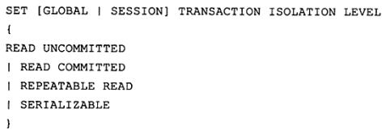

事务
ACID特性
隔离级别
事务控制语句
隐式提交的sql语句
Redo log
Undo log
innodb存储引擎中的锁
锁的类型
锁的算法
一致性非锁定读
一致性锁定读
外键锁
事务
ACID特性
事务是数据库区别于文件系统的重要特性之一,事务会把数据库从一种一致状态转换为另一种一致状态.在数据库提交工作时，可以确保其要么所有修改都已经保存，要么所有修改都不保存。
Innodb存储引擎中的事务完全符合ACID的特性：
1、原子性（atomicity）：原子性是指整个数据库事务是不可分割的工作单位.只有使事务中所有的数据库操作执行都成功，才算整个事务成功.如果事务中任何一个sql语句执行失败，那么已经执行成功的sql语句也必须撤销,数据库状态应该退回到执行事务前的状态.
2、一致性（consistency）：一致性是指事务将数据库从一种状态转变为下一种一致的状态，在事务开始之前和事务结束以后，数据库的完整性约束没有被破坏.
3、隔离性（isolation）：一个事务的影响在该事务提交前对其他事务都不可见
4、持久性（durability）：事务一旦提交，其结果就是永久性.
隔离级别
Sql标准定义的四个隔离级别：
1、未提交读（Read uncommitted）
2、提交读（Read committed）
3、可重复读（Repeatable read）
4、串行化（Serializable）
mysql默认为repeatable read
oracle默认为read committed
设置隔离级别

事务控制语句
Mysql命令行的默认设置下，事务都是自动提交的,即执行sql语句后就会马上执行commit操作.因此开始一个事务，必须使用begin,start transaction,或者执行set autocommit=0,以禁用当前会话的自动提交；
Start transaction | begin：显示地开启一个事务
Commit：提交事务，并使得已对数据库做的所有修改成为永久性.
Rollback：回滚事务，撤销正在进行的所有未提交的修改.
隐式提交的sql语句
某些Sql语句会产生一个隐式的提交操作,即执行完这些语句后，会有一个隐式的commit操作；


注意点：Truncate table 语句是DDL，虽然和delete整张表的结果一样，但它不能被回滚
Redo log
在innodb存储引擎中，事务日志通过重做（redo）日志文件和innodb存储引擎的日志缓冲来实现，当开始一个事务时，会记录该事务的一个lSN;当事务执行时，会往innodb存储引擎的日志缓冲里插入事务日志;当事务提交时，必须将innodb存储引擎的日志缓冲写入磁盘,也就是写数据前，需要先写日志.称为预写日志方式（WAL）；
Innodb存储引擎通过预写日志的方式，来保证事务的完整性.这意味着磁盘上存储的数据页和内存缓冲池中的页是不同步的,对于内存缓冲池中页的修改，先是写入重做日志文件，然后再写入磁盘，是一种异步方式.；
Log sequence number 表示当前的LSN
Log flushed up to 表示刷新到重做日志文件的LSN
Last checkpoint at表示刷新到磁盘的lSN
Pages flushed up to 刷新事务和提交后的LSN（新添加的参数）
Undo log
重做日志记录了事务的行为，可以很好地通过其进行重做，但是事务有时还需要撤销，这时就需要undo.undo与redo正好相反，对于数据库进行修改时，数据库不但产生redo，而且还会产生一定量的undo，即使你执行的事务或语句由于某种原因失败了，或者如果你用一条rollback语句请求回滚,就可以利用这些undo信息将数据回滚到修改之前的样子.与redo不同的是，redo存放在重做日志文件中，undo存放在数据库内部的一个特殊段中，undo segment.undo段位于共享表空间内;
innodb存储引擎中的锁
锁的类型
共享锁（S） ： 允许事务读一行数据
排他锁(X) ： 允许事务删除或更新一条数据
意向共享锁（IS）： 事务想要获取一张表中某几行的共享锁
意向排他锁（IX）： 事务想要获取一张表中某几行的排他锁
兼容性（Y：兼容，N：不兼容）
S | X | IS | IX | |
S | Y | N | Y | N |
X | N | N | N | N |
IS | Y | N | Y | Y |
IX | N | N | Y | Y |
锁的算法
Record Lock：单行记录上上锁
Gap Lock：间隙锁，锁定一个范围，但不包含记录本身
Next-key Lock：Record Lock + Gap Lock，锁定一个范围，并锁定记录本身，目的是为了解决幻读现象
一致性非锁定读
一致性非锁定读是值InnoDB存储引擎通过多版本控制（multi versioning）的方式来读取当前执行时间数据库中的数据。如果被读的数据行被加了排他锁，在读取这行数据的时候并不会等待锁释放，而是读取该行的一个快照数据。
之所以称为非锁定读，因为不需要等待被访问行的X锁的释放。快照数据是指改行之前的数据版本，该实现通过undo段来完成。
非锁定读的方式极大提高了数据库的并发性。在InnoDB存储引擎中，这是默认的读取方式。
快照数据其实就是当前行数据的一个历史版本，每行记录可能有多个版本。这种技术成为行多版本技术。由此带来的并发控制，成为多版本并发控制（Multi Version Concurrency Control,MVCC）。
在事务的隔离级别，READ COMMITED和REPEATABLE READ下，对快照数据的定义不同。在READ COMMITTED事务隔离级别下，对于快照数据，非一致性读总是读取被锁定行的最新一份快照数据。而在REPEATABLE READ事务隔离级别下，对于快照数据，非一致性读总是读取事务开始时的数据版本。
也就是说在READ COMMITTED事务隔离级别下，非锁定读读取到的数据是最新的快照版本数据，也就是可以读到另一个事务已经提交了的快照数据。而在REPEATABLE READ下，只会读到事务开始前的数据。
一致性锁定读
在默认情况下，InnoDB存储引擎对数据采用的是一致性非锁定读。但是有些情况下为了保证数据逻辑的一致性，需要对SELECT的操作加锁。InnoDB存储引擎对于SELECT语句支持两种一致性的锁定读（locking read）操作：
1、 SELECT …… FOR UPDATE
2、 SELECT …… LOCK IN SHARE MODE
其中，SELECT …… FOR UPDATE对读取的记录加一个X锁，其他事务不能对已锁定的行加任何锁。而SELECT …… LOCK IN SHARE MODE是对读取的记录加一个S锁。
即使被读取的行被加了一致性锁定读，如果有另一个一致性非锁定读的操作来读取该行数据是不会阻塞的，读取的是该行的快照版本。
SELECT …… FOR UPDATE和SELECT …… LOCK IN SHARE MODE必须在一个事务中，当一个事务提交了，锁就释放了。因此在使用上述两个SELECT锁定语句时，必须开启事务。
关于一致性非锁定读和一致性锁定读自己的理解：
一致性非锁定读情况下，事务A进行了select操作，此时事务B可以对事务A select的行进行update操作，此时事务A再次进行select操作，读取到的结果和事务的隔离级别有关，如果是repeatable read级别，不论事务B有没有进行commit操作，事务A此时查询到的结果还是第一次的结果，如果是read committed级别，若事务B没有提交，此时查询到的结果还是第一次的结果，若事务B提交了，此时查询到的结果就会是事务B更新之后的结果。
一致性锁定读情况下，事务B无法对事务A select的行进行update操作。
步骤 | 事务A（repeatable-read） SET @@tx_isolation='repeatable-read' | 事务B SET @@tx_isolation='repeatable-read' |
1 | begin; | |
2 | select * from users where user_id=1; user_id name 1 李四 | |
3 | begin； | |
4 | update users set name=‘张三’ where user_id=1; | |
5 | select * from users where user_id=1; user_id name 1 李四 | |
6 | commit; | |
7 | select * from users where user_id=1; user_id name 1 李四 | |
8 | commit; | |
9 | select * from users where user_id=1; user_id name 1 张三 |
步骤 | 事务A（read-committed）幻读 SET @@tx_isolation='read-committed' | 事务B SET @@tx_isolation='read-committed' |
1 | begin; | |
2 | select * from users where user_id=1; user_id name 1 李四 | |
3 | begin； | |
4 | update users set name=‘张三’ where user_id=1; | |
5 | select * from users where user_id=1; user_id name 1 李四 | |
6 | commit; | |
7 | select * from users where user_id=1; user_id name 1 张三 | |
8 | commit; | |
9 | select * from users where user_id=1; user_id name 1 张三 |
步骤 | 事务A（read-uncommitted ）脏读 SET @@tx_isolation='read-uncommitted' | 事务B |
1 | begin; | |
2 | select * from users where user_id=1; user_id name 1 李四 | |
3 | begin； | |
4 | update users set name=‘张三’ where user_id=1; | |
5 | select * from users where user_id=1; user_id name 1 张三 | |
6 | commit; | |
7 | select * from users where user_id=1; user_id name 1 张三 | |
8 | commit; | |
9 | select * from users where user_id=1; user_id name 1 张三 |
外键锁
对于外键值的插入和更新，首先需要查找父表中的记录，即SELECT父表。但是对于父表的SELECT操作，不是采用一致性非锁定读的方式，因为这样可能会发生数据不一致的问题。此时采用过的是SELECT …… LOCK IN SHARE MODE的方式，给父表的记录加一个S锁。如果此时对父表加一个X锁，则会被阻塞。
事务和锁最重要的三张表
在information_schema下，有三张表记录了事务和锁的信息：
INNODB_TRX
INNODB_LOCKS
INNODB_LOCK_WAITS